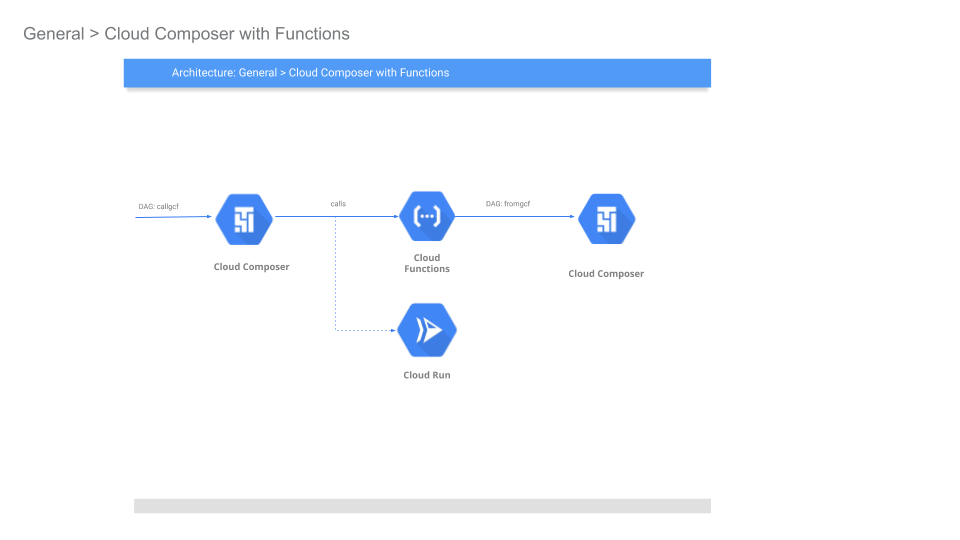
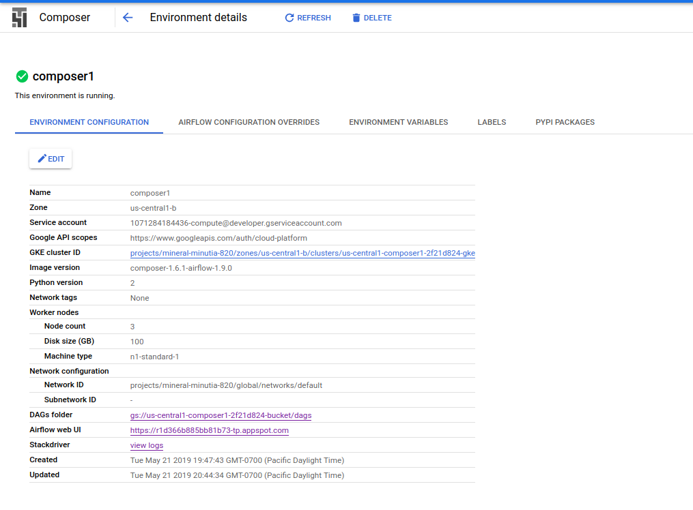
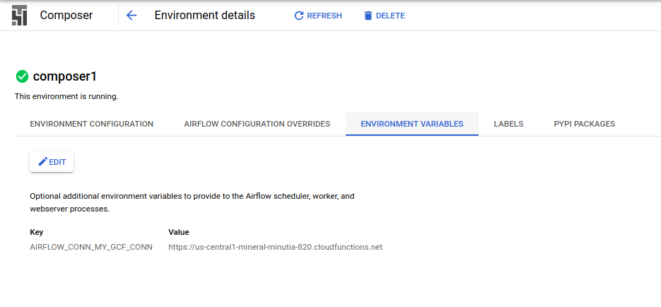
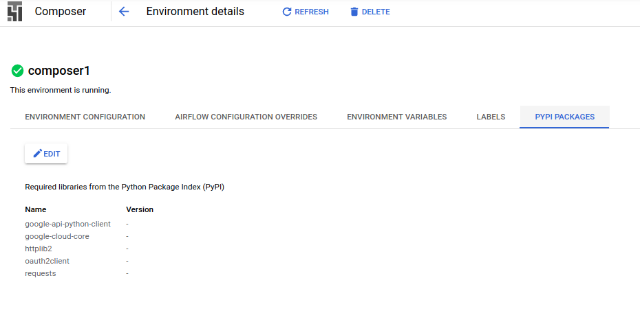
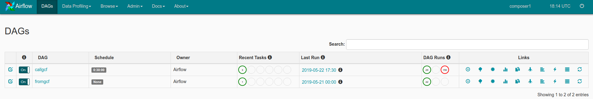
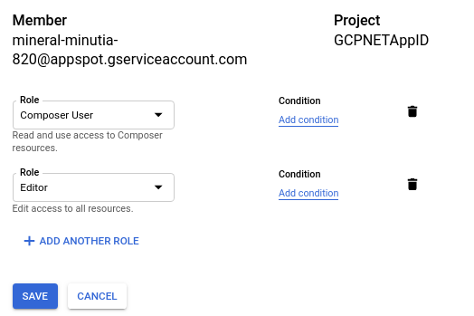
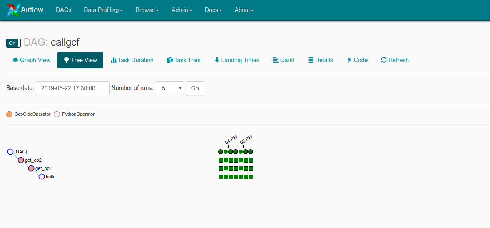
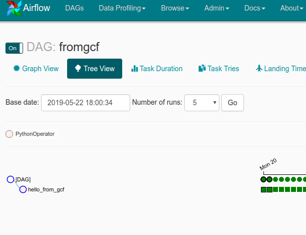

ARTICLES
Calling Cloud Composer > GCF > Composer securely
Sample Cloud Composer (Apache Airflow) configuration to securely invoke Cloud Functions or Cloud Run.
In addition this sample shows inverse: how Cloud Functions can invoke a Composer DAG securely. While GCF->Composer is documented here, the configuration detailed here is minimal and (to me), easier to read.

Anyway, the following will setup cloud composer, then we will trigger composer to invoke a cloud function…the cloud function will just trigger a different cloud composer endpoint….you can make it cycle back and eat its tail…
1. Create Composer Environment
export GOOGLE_PROJECT_ID=`gcloud config get-value core/project`
export PROJECT_NUMBER=`gcloud projects describe $GOOGLE_PROJECT_ID --format='value(projectNumber)'`
gcloud composer environments create composer1 --location us-central1
gcloud composer environments list --locations us-central1
2. Add Python Packages and GCF Connection URL
The following steps sets up Airflow connections we will use internally. The commands below describes a URL to a GCF function we will enable later.
Configure
requirements.txtgcloud composer environments update composer1 \ --update-pypi-packages-from-file requirements.txt --location us-central1Configure connection
gcloud composer environments update composer1 \ --update-env-variables=AIRFLOW_CONN_MY_GCF_CONN=https://us-central1-$GOOGLE_PROJECT_ID.cloudfunctions.net --location us-central1
Note: each of these commands takes ~10mins; go grab a coffee.
Verify configurations via cli and on the Cloud Console for Composer
gcloud composer environments describe composer1 --location us-central1
The following will list the default GCS bucket used for its configurations and DAG storage
gcloud composer environments describe composer1 --location us-central1 --format="get(config.dagGcsPrefix)"
- You can now open up the Airflow GUI
and also see the GCP Console:
Config: 
Env 
Python Packages 
3. Identify the client_id used by IAP
Cloud Composer is shielded by Cloud Identity Aware proxy. The following command will identify the oauth2 client_id it uses which we will later need to trigger DAGs externally from GCF. For refrerence, see triggering with gcf
- Get ariflow URL:
If you are an Editor on the project running Airflow, you should have Editor rights to invoke the endpoint:
(the follwing command uses jq cli to parse JSON)
$ curl -s -H "Authorization: Bearer `gcloud auth print-access-token`" https://composer.googleapis.com/v1beta1/projects/$GOOGLE_PROJECT_ID/locations/us-central1/environments/composer1 | jq [.config.airflowUri]
In my case, the URL for Airflow is:
[
"https://r1d366b885bb81b73-tp.appspot.com"
]
- Use the URL to extract the client ID
Attempt to make an unauthenticated call to the URL. You should see an error but within the curl output you will find the elusive client_id:
curl -v https://r1d366b885bb81b73-tp.appspot.com
eg, in my case the command above showed
location: https://accounts.google.com/o/oauth2/v2/auth?client_id=491562778408-sj8hb4035bp7ui918ra0i9qbhbqnejk1.apps.googleusercontent.com&response_type=code&scope=openid+email&redirect_uri=https://r1d366b885bb81b73-tp.appspot.com/_gcp_gatekeeper/authenticate&cred_ref=true&state=CilodHRwczovL3IxZDM2NmI4ODViYjgxYjczLXRwLmFwcHNwb3QuY29tLxIwQU91REJvbndMSlJlOEJ3aTBkaDBZeXdlbktYSTBxNVpxdzoxNTU4NTE0MzgyMzc4
which means the client_id is 491562778408-sj8hb4035bp7ui918ra0i9qbhbqnejk1.apps.googleusercontent.com
Note the client_id and composer_url:
target_audience = `491562778408-sj8hb4035bp7ui918ra0i9qbhbqnejk1.apps.googleusercontent.com`
url = `https://r1d366b885bb81b73-tp.appspot.com`
4. Deploy DAGs
- Deploy the DAG that sends authenticated calls to GCF:
Edit to_gcf.py and replace the following line with your projectID
target_audience = 'https://us-central1-$GOOGLE_PROJECT_ID.cloudfunctions.net/echo_app_python'
then
gcloud composer environments storage dags import --environment composer1 --location us-central1 --source to_gcf.py
Deploy the DAG that receives authenticated calls from GCF:
gcloud composer environments storage dags import --environment composer1 --location us-central1 --source from_gcf.py

5. Deploy GCF
Edit main.py and update target_url and url with the values from step 3:
in my case:
target_audience = '491562778408-sj8hb4035bp7ui918ra0i9qbhbqnejk1.apps.googleusercontent.com'
url = 'https://r1d366b885bb81b73-tp.appspot.com'
then deploy
gcloud functions deploy echo_app_python --region=us-central1
6. Set IAM Permissions
Now set IAM permissions to
Allow Composer to call GCF
When we setup composer, we did not specify the serivce account it should run as. By default, it will use the compute engine service account which is in the form:
$PROJECT_NUMBER-@developer.gserviceaccount.com
the apply:
gcloud alpha functions add-iam-policy-binding echo_app_python \
--member serviceAccount:$PROJECT_NUMBER-compute@developer.gserviceaccount.com --role roles/cloudfunctions.invoker
Allow GCF to call Composer
During our setup of Cloud Functions, we did not specify a service account. By default GCF will use an account in the form:
$GOOGLE_PROJECT_ID@appspot.gserviceaccount.com
so using that, go to the Cloud Consoles IAM page and for that account, add the Composer User IAM role

GCF invokes a DAG directly using the Experimental Rest Endpoint
7. Invoke DAG directly
The default DAG callgcf DAG is set to run every 30minutes. However, you can invoke it directly if you want via the UI or CLI:
On the console, you should see invocation back and forth:
callgcf: fromgcf: 
References
- Automatic oauth2: Using Cloud Scheduler and Tasks to call Google APIs
Airflow: Authenticating to GCP APIs Note: the tokens provided by
google_cloud_defaultareaccess_tokensintended to invoke GCP API; they cannot be used to access Cloud Run or GCF endpoints
Appendix
The following snippets details how to invoke the DAG directly using a service_account json file.
Note: you must first allow that service accout IAM permissions the Composer User first
- service_account_dag.py
from google.oauth2 import id_token
from google.oauth2 import service_account
import google.auth
import google.auth.transport.requests
from google.auth.transport.requests import AuthorizedSession
target_audience = '491562778408-sj8hb4035bp7ui918ra0i9qbhbqnejk1.apps.googleusercontent.com'
url = 'https://r1d366b885bb81b73-tp.appspot.com/api/experimental/dags/callgcf/dag_runs'
certs_url='https://www.googleapis.com/oauth2/v1/certs'
additional_claims = { }
creds = service_account.IDTokenCredentials.from_service_account_file(
'/path/to/svc.json',
target_audience= target_audience, additional_claims=additional_claims)
authed_session = AuthorizedSession(creds)
# make authenticated request
headers = {
"conf": ""
}
r = authed_session.post(url, headers=headers)
print r.status_code
print r.text
# verify
request = google.auth.transport.requests.Request()
idt = creds.token
print idt
print id_token.verify_token(idt,request,certs_url=certs_url)
curl
$ curl -X POST -d '{"conf":""}' -H "content-type: application/json" -H "Authorization: Bearer $ID_TOKEN" { "message": "Created <DagRun callgcf @ 2019-05-22 09:11:46: manual__2019-05-22T09:11:46, externally triggered: True>" }